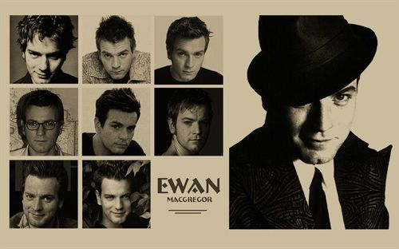

短期内看了两部Ewan McGregor主演的电影，如果你看过《Trainspotting》一定对他有深刻的印象。上个月看了他与Jim Carrey搭档主演的《I Love You Phillip Morris》 ，同性恋题材，Jim Carrey的表演似乎已经到了尽头，就象送给观众的一份快餐，吃下去毫无滋味。人的多变性导致我们希望看到感受到的事物，不是停滞的，而需要有未知的变化。这种贪婪性也暴露在看电影上，Jim Carrey多少年....一直是同一个表演模式，再好吃的美食也疲劳了。因为有了Ewan McGregor韧性有余的表演，《I Love You Phillip Morris》才增色不少，否则这部仍然是Jim Carrey式的电影。Ewan McGregor在片中出演Jim Carrey的GF，并未刻意夸大“姨”的表演，而是有控制有收敛的，只在细节上梢作展示，耐人寻味。
昨晚的《The Ghost Writer 》（影子写手），Ewan McGregor主演前英国首相回忆录的枪手。电影主题围绕着The Ghost Writer展开，在我看来电影真正描写的是“一个傀儡的诞生”。不擅长做出色政客，并不是NO.1，没关系，因为更大权利拥有者需要的仅仅是一个傀儡。 大到国家间的政治，小到单位企业的人事关系，我们身边不乏这样的故事。你只需要听话，为我所用，有基本的工作能力。影片中的前英国首相正是如此诞生的人物。
如果精力允许，打算把Ewan McGregor之前的电影再回顾一遍，他特别赋有表演欲望，演技自然流畅，能感受到他体内积聚着丰富饱满的情感，但他又不是那么快就爆发，而是有控制地释放，不持才自傲，所以也没有很多演员身上的油气。爱死他微微上扬似笑非笑的嘴角，这种表情我在有些人的面孔上看到过，他们聪明、温和、低调，眼睛明亮会说话，圆滑又可爱。

这是《TRAINSPOTTING》中的一段台词，曾blog于“2005年11月1日：
Choose a job.
Choose a career. Choose a family.
Choose a fucking big television.
Choose washing machines, cars, compact disc players and electrical tin openers.
Choose good health, low cholesterol, and dental insurance.
Choose fixed interest mortgage repayments.
Choose a starter home. Choose your friends.
Choose leisurewear and matching luggage.
Choose a three-piece suit on hire purchase in a range of fucking fabrics. Choose DIY and wondering who the fuck you are on a Sunday morning.
Choose sitting on that couch watching mind-numbing, spirit-crushing game shows, stuffing fucking junk food into your mouth.
Choose rotting away at the end of it all, pissing your last in a miserable home, nothing more than an embarrassment to the selfish, fucked up brats you spawned to replace yourselves.
Choose your future. Choose life…But why would I want to do a thing like that? I chose not to choose life. I chose something else.
And the reasons?
There are no reasons.
Who needs reasons when you’ve got heroin?
2 Responses to “观影《The Ghost Writer 》”
2010-08-10
Ewan的确做到了收放自如。眼睛很明亮有神，很吸引人。
2010-08-13
对他最深的印象还是和妮可合作的《红磨坊》
Leave A Reply
存档只读，评论已关闭。